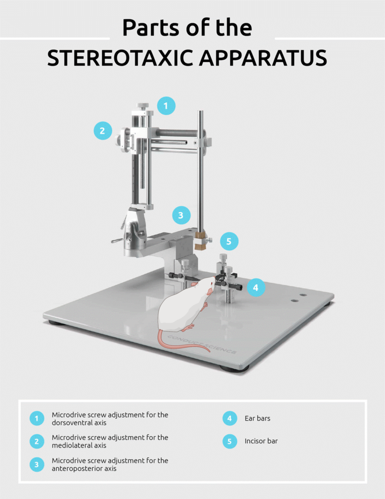
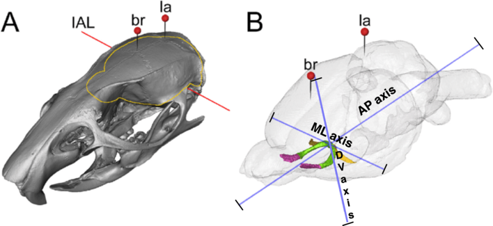
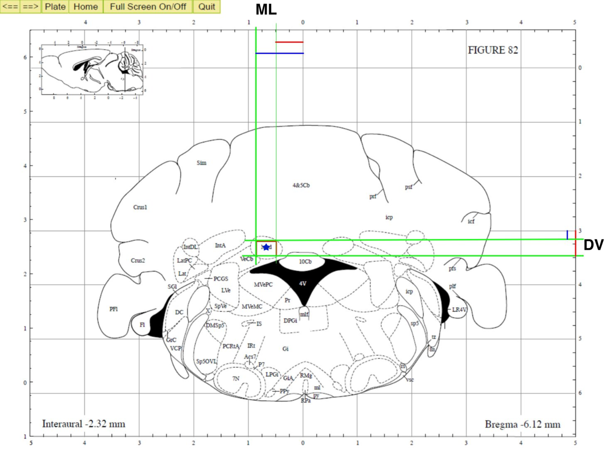

Background¶
Introduction¶
In neuroscience, microinjection techniques are widely used to trace neuronal populations and asses electrophysiological and pharmacological approaches. Thus, to perform this task is mandatory to use an stereotaxic apparatus, this device helps to fix the mouse head and positioning the needle in specific coordinates to reach the nucleus of the brain under study. The resultant coordinates are calculated per each animal by the researcher during the surgery, because they differ in every mouse depending on the mouse size and therefore the bregma location. Additionally, establish the accurate coordinates is crucial for a successful experiment.
{kind=link}
Based on a very well documented atlas, researchers make the math at the moment, however it can become a problem mostly because anesthesia times, and error in calculations.
Coordinates determination¶
The reference start point to perform the surgery are either of the two craniometric points: Bregma (br) or lambda (la).
{kind=link}
Image shows the dorsal surface of the mouse skull showing the horizontal plane reference points, bregma and lambda. Lambda is defined as the point of intersection of the projection of lines of best fit through the sagittal and lambdoid sutures.
Using one of this reference points and based on the atlas, researchers calculate three coordinates, which belong to the nucleus brain “central” point where the needle/pipette tip must be placed.
The three coordinates calculated are:
Antero-posterior (AP): This coordinate is in the longitudinal axis which is in the same line of bregma and lambda. Surface of the mice cranium.
Medio-Lateral (ML): This coordinate is in the transversal axis which runs from left to right of the brain.
Dorso-Ventral (DV): This coordinate is in the vertical axis which runs from the dorsal to the ventral cranium surface.
Researchers choose bregma or lambda as reference point, depending on the proximity of the target brain nucleus to either of them.To establish the coordinates, researchers first must anesthetize the mouse and immobilize the head in the device, by placing the sticks into both external ear ducts. Then, after to expose the skull surface, the needle is carefully placed over one of the references points (bregma or lambda). The measured coordinates (three axis) at this references point is consider as the coordinate “0”, from it, researches have to calculate how far they need to move the needle in the three axis to get to the target nucleus of the brain (showed as a blue start in the image below).
{kind=link}
Image references:
img1 edited for the illustrative purposes of this report.
img2 edited for the illustrative purposes of this report.
img3 edited for the illustrative purposes of this report.